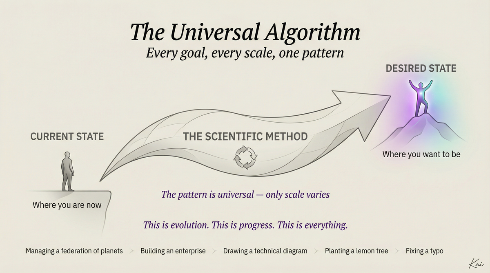
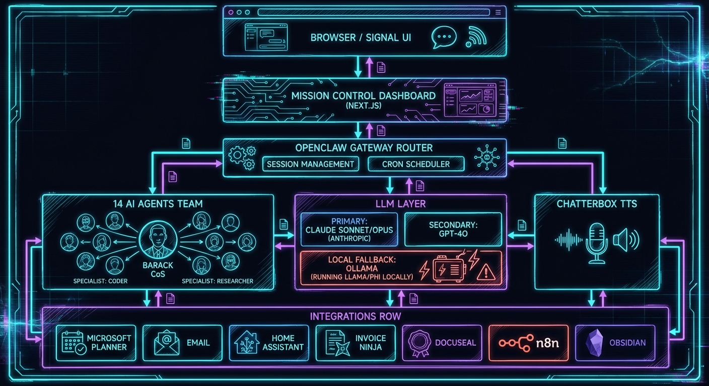

👋 Who Am I?
🎓 Academic
- BBA, MBA, MSBA — University of Iowa
- Master of Data Analytics Leadership — Drake (Student of the Year)
- Adjunct since 2018: R, Python, Analytics, Capstone
- You may have had me before 👋
💼 Professional
- CX Analytics Manager @ Agilent Technologies
- Meeker Technologies (consulting LLC, 2026)
- Focus: AI systems that empower, not replace
Failed out of Iowa State freshman year. 1.08 GPA. Worked three jobs. Got my CDL. Then came back and got five degrees from Iowa.
Failing doesn't define you. What you do next does.
🏠 Home Base
- Tiffin, Iowa — wife Tiffany, daughters Ellie & Tessa
- Mini bernedoodle named Maui
- Running AI infrastructure from my basement
⏱️ My AI Journey
🤖 ChatGPT Era
- Tab-based Q&A — open, ask, close
- Impressive demos, no real workflow
- No memory, no continuity
- Every conversation starts cold
- Insight: this isn't sustainable
💼 Copilot Era
- Microsoft Copilot baked into M365
- GitHub Copilot in the IDE
- Cursor, Perplexity, specialized tools
- Better — but still siloed, still reactive
- Insight: tools ≠ infrastructure
🚀 PAI Era
- Daniel Miessler's PAI + OpenClaw — the stack
- Personal AI Infrastructure — always on
- 14 specialized agents, each with a domain
- Voice, memory, proactive automation
- This is what I'm building you today
🧬 Standing on the Shoulders of Giants
🤖 PAI — Personal AI Infrastructure
- Orchestrate multiple agents around your goals
- Persistent memory that grows with you
- Workflow automation + self-improvement loops
- 243+ Fabric patterns for content analysis
- Goal: AI that works for you, not the cloud vendor
🌐 Human 3.0 — The Destination
- Human 1.0 — Hunter-gatherer, physical survival
- Human 2.0 — Industrial worker, economic output
- Human 3.0 — AI-augmented, self-directed, creative
— Daniel Miessler
What I'm showing you today is one person's attempt to get there.
🔄 The PAI Loop — How It Actually Works

PAI Outer Loop: Current State → Desired State
🌀 Outer Loop — Your Life
- Where are you now? (current state)
- Where do you want to be? (desired state)
- PAI continuously closes that gap
⚙️ Inner Loop — Daily Operations
- Ingest → Analyze → Synthesize → Act
- Email, calendar, tasks, research, communications
- Runs autonomously — briefings, triage, updates
- Reports back for human decision on exceptions
You focus on the important.
🎯 Today's Thesis
And you should run your own.
🔴 Most people
Open ChatGPT, type a question, get an answer, close the tab. No memory. No context. No continuity.
🟡 Power users
Have a workflow. Use Claude for writing, Cursor for code, Perplexity for research. Siloed tools.
🟢 Infrastructure
A system that knows you, routes intelligently, runs 24/7, and gets smarter over time.
🧩 The Problem: One Brain Can't Do Everything
Think about how your organization works:
- You have a CEO — vision, decisions
- You have a CFO — numbers and risk
- You have a lawyer — careful, precise
- You have a exec assistant — routing, scheduling
- Each has a different communication style
- Each has domain expertise
- Each has different risk tolerance
⚠️ Problems with "one big brain"
- Context windows fill up fast
- No specialization = mediocre at everything
- No memory between sessions
- No way to parallelize work
- No audit trail
- Single point of failure
- Can't run autonomously
💡 The Solution: Treat AI Like Infrastructure
🏗️ Infrastructure principles
- Specialization — right tool for the job
- Redundancy — no single point of failure
- Observability — know what's happening
- Automation — runs without you
🤖 Applied to AI
- 14 agents, each with a persona + domain
- Gateway routes to the right agent
- Scheduled crons run autonomously
- Memory persists across sessions
🧭 System Philosophy
🎯 Specialization
Each agent has a narrow job and does it well. Barack is chief of staff. Matlock is legal. Vega is trading. Don't cross the streams.
⚡ Always On
Cron jobs fire at 6:45 AM. Inbox is monitored. Briefings happen whether I ask for them or not. This isn't a chatbot — it's a team.
🛡️ Clear Failure Boundaries
Agents know what they can't do. They escalate. They don't hallucinate into dangerous territory. Legal says "consult a real lawyer" when it matters.
🔒 Privacy First
Sensitive data never leaves the house. Local TTS. Local memory. Cloud AI for reasoning only.
🔄 Continuous Learning
Memory files grow. Agents get context updates. The system gets smarter as you use it.
🧩 Composable
Add integrations incrementally. Start with one agent. Add hardware when you're ready. Level up over time.
🏛️ Architecture Overview

🖥️ Hardware Layer
🍎 Mac mini M4
Primary compute — ~$500
- 16GB RAM, 228GB SSD
- Apple Silicon (MPS acceleration)
- Runs: OpenClaw, Mission Control, Chatterbox TTS
- Always on, whisper-quiet, 6W idle
🗄️ Proxmox Node 1
Intel N100, 16GB — ~$200
- Home Assistant VM (smart home)
- n8n CT (workflow automation)
- AdGuard CT (DNS filtering)
- OPNsense VM (firewall/router)
- Metabase CT (analytics)
🗄️ Proxmox Node 2
Intel N100, 16GB — ~$200
- Plex media server
- Sonarr / Radarr / Prowlarr
- Invoice Ninja (invoicing)
- DocuSeal (contracts)
- SearXNG (private search)
🦀 Gateway Layer: OpenClaw
OpenClaw is the nervous system of the whole operation. Every message, every agent, every cron job flows through it.
What it does
- 🔀 Session management — maintains context per agent
- 🛣️ Agent routing — Barack gets general queries, Vega gets market questions
- ⏰ Cron scheduling — briefings, email checks, automations
- 📡 Multi-channel — Signal, iMessage, Email, web dashboard
- 🔊 TTS integration — voice output on any channel
- 🧠 Memory injection — feeds context to agents
Channels in use
- 📱 Signal — primary messaging (me → system)
- 💬 iMessage — family automations
- 📧 Email — Inbox agent monitors
- 🖥️ Mission Control — web dashboard
Example cron jobs
- 6:45 AM — Morning briefing (Barack)
- Every 30 min — Email triage (Inbox)
- Friday 4 PM — Weekly status report
- Sunday 8 PM — Week preview
🤖 The Agent Team
14 specialized agents. Each with a persona, domain, model, and voice. Together they cover everything.

🎩 Meet the Team
— Barack, Chief of Staff
▶ Play Obama-voiced team introduction
▶ Hear Barack's intro
Barack
Command · Coordination · Routing
Domain
- Request routing
- Morning briefings
- Cron orchestration
- Memory injection
Integrations
- Signal (primary channel)
- OpenClaw gateway
- All 13 agents
- Mission Control
▶ Hear Olivia's intro
Olivia
Accountability · Deadlines · No Excuses
Domain
- Deadline tracking
- Commitment reviews
- Slippage alerts
- Accountability loops
Trigger
- Weekly check-ins
- "Is this done yet?"
- Missed deadline alerts
- Project retrospectives
▶ Hear Marcus's intro
Marcus
Deep Research · Analysis · OSINT
Domain
- Company & market research
- OSINT & due diligence
- Academic analysis
- Intelligence briefs
Integrations
- SearXNG (private search)
- Fabric patterns (243+)
- Web fetch & scraping
- Obsidian research notes
▶ Hear Riley's intro
Riley
Copywriting · Editing · Voice
Domain
- Blog posts & long-form
- Client proposals
- Email drafts
- Teaching materials
Why Opus?
- Writing quality matters
- Every word is deliberate
- Tone matching is hard
- Opus does it right, first time
▶ Hear Matlock's intro
Matlock
Contracts · Risk · Legal Research
Domain
- Contract review & redline
- Risk clause detection
- Legal research
- SOW review for consulting
Design principle
- Always flags human review
- Never gives final legal advice
- Opus for maximum precision
- Attenborough voice = gravitas
▶ Hear Sterling's intro
Sterling
Consulting · Clients · Revenue · Operations
Domain
- Invoice Ninja integration
- Client relationship tracking
- Proposal drafting
- Revenue pipeline
Works with
- Matlock (contract review)
- Maxwell (positioning)
- Riley (proposal writing)
- Barack (routing)
▶ Hear Vega's intro
Vega
Markets · Quant Analysis · Portfolio
Domain
- Market research & screening
- Portfolio analysis
- Options modeling (the name is a hint)
- Financial concept explainers
Philosophy
- Presents analysis, not trades
- Human makes final call
- Always quantifies uncertainty
- Las Vegas — the name is intentional
▶ Hear Sage's intro
Sage
Curriculum · Grading Rubrics · Student Questions
Domain
- Assignment rubric drafting
- Concept explanation testing
- Student feedback synthesis
- Canvas LMS integration
Real impact
- 2 courses this semester
- Teaching prep time cut ~50%
- Taylor voice = approachable
- Students love the energy
▶ Hear Forge's intro
Forge
DevOps · Proxmox · Networking · Security
Domain
- Proxmox cluster management
- Docker & container ops
- Network config & SSL
- Firewall & security audits
Infrastructure managed
- Mac mini M4 (10.0.0.166)
- 2× Proxmox nodes
- 20+ services/containers
- Tailscale VPN mesh
▶ Hear Maxwell's intro
Maxwell
Public Relations · Positioning · Messaging
Domain
- External communications
- Consulting positioning
- LinkedIn & blog strategy
- Thought leadership
Riley vs Maxwell
- Riley = the writer
- Maxwell = the strategist
- Maxwell decides the message
- Riley crafts the words
▶ Hear Quinn's intro
Quinn
Family · Home · Personal Life
Domain
- Family calendar coordination
- Gift ideas & occasions
- Trip planning
- Household logistics
Why Haiku?
- "What should we do Sunday?"
- Personal queries = low complexity
- High volume, low stakes
- Saves $$ vs Sonnet/Opus
▶ Hear Taylor's intro
Taylor
Calendar · Scheduling · Daily Rhythms
Domain
- Daily calendar review
- Time block optimization
- Appointment reminders
- Meeting prep summaries
Integrations
- M365 Calendar
- Microsoft Planner tasks
- Cron job scheduling
- Morning briefing input
▶ Hear Inbox's intro
Inbox
Email · Prioritization · Routing
Domain
- Urgency classification
- Action item extraction
- Daily digest production
- Auto-routing to agents
Volume math
- ~80 emails/day (two accounts)
- Haiku = $0.004/1K tokens
- Full inbox triage = cents/day
- Human attention: 3 emails max
▶ Hear Dev's intro
Dev
Code · Architecture · Debugging · Code Review
Domain
- TypeScript / bun (never npm)
- Architecture decisions
- Debugging & code review
- Integration scaffolding
Pairs with
- Claude Code (long builds)
- Codex (parallel agents)
- Forge (infra integration)
- ACP harness (complex tasks)
🎯 Model Selection Strategy
Not every task needs the best model. Matching model to task is infrastructure thinking.
| Tier | Model | Use When | Agents |
|---|---|---|---|
| Opus | Claude Opus 4.5 | Legal precision, long-form writing, complex reasoning | Matlock, Riley, Maxwell |
| Sonnet | Claude Sonnet 4.5/4.6 | Balanced quality + speed for most work | Barack, Marcus, Sage, Dev, Forge, Vega |
| Haiku | Claude Haiku 4.5 | High-volume triage, simple routing, personal tasks | Quinn, Taylor, Inbox |
🎤 Voice System: Chatterbox TTS

🔊 Chatterbox TTS
- Local inference — nothing leaves the house
- MPS-accelerated on Apple M4
- Running at
localhost:4126 - 6 cloned voices
- ElevenLabs-compatible API
🎭 Cloned Voices
- 🎩 Obama — Barack, Maxwell (authority)
- 🎸 Taylor Swift — Sage, Taylor (approachable)
- ⚖️ Olivia Benson — Olivia (direct)
- 🎬 David Attenborough — Matlock (gravitas)
- 🎙️ Morgan Freeman — Marcus, Forge, Vega
🔄 Voice Pipeline
mic input
→ Web Speech API (STT)
→ OpenClaw (routing)
→ Agent (Claude)
→ Chatterbox TTS
→ audio playbackEntirely local except the Claude API call. Voice queries from Mission Control work hands-free.
🖥️ Mission Control Dashboard
Next.js dashboard built on top of OpenClaw. 20 pages covering every domain.
📋 Page Groups
- Core: Dashboard, Feed, Briefing, System
- Work: Tasks, Calendar, Projects, Docs
- Business: Business, Invoices, Contracts, People
- Team: Agents, Team, Channels
- Analytics: Trading, Memory
- Life: Family, Teaching, Home Assistant
🎯 Why a dashboard?
Chat interfaces are great for conversation. They're terrible for seeing the state of your world.
- Live task status without asking
- Agent team overview
- Invoice + contract status
- Family calendar at a glance
- Voice queries from any page
- Home automation controls
🔗 Integration: Microsoft Planner
What's integrated
- Bidirectional task sync via Graph API
- OAuth auto-refresh (no manual re-auth)
- Barack can create/update/complete tasks
- Mission Control Tasks page pulls live
- Planner ↔ n8n workflows for automation
# Barack creates a Planner task
# via Signal message:
"Add task: Review Q1 analytics
report, due Friday, Agilent board"
# Barack calls Graph API:
POST /planner/tasks
{
"title": "Review Q1 analytics report",
"dueDateTime": "2026-03-07",
"planId": "agilent-main"
}🏠 Integration: Home Assistant
What's connected
- Lights, climate, locks, automations
- Full bidirectional (read + control)
- Mission Control has a Home page
- Voice queries: "Is the garage door open?"
- Automations triggered by agent actions
Real automations
- Morning briefing → lights to 100% in kitchen
- "I'm leaving" → lock all doors, lower thermostat
- Kids' bedtime → Ellie's room lights dim at 8 PM
- Late night work → office stays lit, rest of house dims
# Quinn handles family queries:
"Turn off Tessa's room lights,
she fell asleep"
# Quinn calls HA REST API:
POST /api/services/light/turn_off
{
"entity_id": "light.tessas_room"
}
# Barack's morning briefing
# checks door/lock status:
GET /api/states/binary_sensor
.garage_door📧 Integration: Email Triage
The problem it solves
Adam gets email from Agilent, U of I, clients, students, vendors, and mailing lists. Reading all of it is a full-time job.
The Inbox agent
- Polls Apple Mail every 30 min via cron
- Haiku classifies: urgent / action / FYI / noise
- Routes action items to Barack
- Sends daily digest to Signal at 9 AM
- Student emails → Sage gets context
Sample digest output
🔴 Urgent (2):
→ Sarah B: Q1 deck review by EOD
→ Client: Contract revision needed
🟡 Action needed (4):
→ Student: question about R assignment
→ Invoice #47: payment received
→ ... 2 more
📚 FYI (12): archived
💰 Integration: Business Operations
📄 Invoice Ninja
- Self-hosted at clients.meekertechnologies.com
- Sterling can create/track invoices
- Payment status in Mission Control
- Cloudflare tunnel for public access
- Client portal for easy payment
✍️ DocuSeal
- Self-hosted at contracts.meekertechnologies.com
- Contract generation + e-signature
- Matlock reviews before sending
- Stored locally (not DocuSign's cloud)
1. Lead comes in via email (Inbox detects)
2. Sterling creates proposal from template
3. Matlock reviews contract
4. DocuSeal sends for e-signature
5. Invoice Ninja creates invoice on signing
6. Planner creates onboarding tasks
Zero manual steps. Human only reviews at decision points.
🧠 Memory System
📅 Daily Files
~/clawd/memory/YYYY-MM-DD.md
Raw logs of what happened each day. Agent conversations, decisions made, tasks created, events noted. Automatically injected into morning briefing context.
🧬 MEMORY.md
Long-term curated memory. Distilled from daily logs during heartbeat reviews. Like a human's long-term memory vs. working memory. Updated by agents automatically.
📒 Obsidian Vault
373+ documents synced via iCloud. Projects, research, notes, teaching materials. Marcus can search it. Riley writes to it. The knowledge graph grows.
# Every morning Barack reads:
- MEMORY.md (long-term context)
- memory/2026-03-02.md (yesterday)
- HEARTBEAT.md (pending items)
# Then synthesizes the morning briefing🔒 Security & Privacy
Local-first principles
- TTS inference runs on the M4, not cloud
- Memory files stay on local hardware
- Obsidian syncs via iCloud (not third-party)
- Sensitive docs: DocuSeal on local Proxmox
- Business data: Invoice Ninja on local Proxmox
Network security
- OPNsense firewall (not consumer router)
- AdGuard DNS-level blocking
- Tailscale VPN for remote access
- Cloudflare tunnel only for business tools
- n8n, Home Assistant: VPN-only
What goes to the cloud
- Claude API — reasoning/generation only
- Signal — end-to-end encrypted
- iCloud — Obsidian sync (encrypted)
- Not: voice audio, memory files, contracts, financial data
📊 Real Results: What This Actually Does
📚 Teaching
- Rubric generation: 30 min → 5 min
- Student FAQ drafts: instant
- Lecture prep: summarize papers via Fabric
- Sage handles "explain this concept" dry runs
- Grade distribution analysis automated
💼 Consulting
- Client proposals: 4 hrs → 45 min
- Contract review: Matlock flags issues
- Invoice → payment: zero manual steps
- Weekly client status: auto-generated
- Business email drafts: Riley handles
🏠 Home & Life
- Morning briefing: 6:45 AM, obama voice
- Email triage: saves 1+ hr/day
- Home automations: lights, climate
- Family scheduling: Quinn coordinates
- Research: Marcus is faster than Google
💵 Cost Breakdown
| Item | One-Time | Monthly | Notes |
|---|---|---|---|
| Mac mini M4 (16GB) | $500 | — | Primary compute, whisper-quiet |
| Proxmox Node 1 (N100) | $600 | — | HA, n8n, firewall, DNS |
| Proxmox Node 2 (N100) | $600 | — | Media, business tools |
| OpenClaw | — | ~$20 | The gateway software |
| Claude API (Anthropic) | — | $30–80 | Varies by usage; Haiku keeps it low |
| Cloudflare | — | Free | Tunnel + DNS |
| Tailscale | — | Free | Personal tier VPN |
| Invoice Ninja, DocuSeal | — | Free | Self-hosted open source |
Compare: Salesforce $150/mo, Notion $16/mo, Calendly $12/mo, DocuSign $25/mo, various AI subscriptions... the self-hosted stack wins fast.
🛠️ How to Build Your Own
🟦 Level 1: The Foundation (Weekend project)
- Mac (any) + OpenClaw installed
- 2-3 agents with distinct personas
- Signal or iMessage for interaction
- Basic memory files
- Cost: $0 new hardware if you have a Mac. ~$20/mo.
🟣 Level 2: Add the Dashboard (1-2 week project)
- Level 1 + Mission Control (Next.js, Claude Code builds it)
- 5-8 agents with voice
- Email integration, calendar integration
- Cost: Level 1 + Chatterbox TTS setup
🟡 Level 3: Full Stack (1-2 month project)
- Level 2 + Proxmox nodes
- 14 agents, n8n, Home Assistant, full integrations
- Cost: ~$2,000 hardware + ongoing
📦 Student Starter Kit
I've built a complete starter kit so you don't start from zero. Available in the class repo.
📁 What's in it
README.md— full architecture overviewQUICKSTART.md— 30-min setup guideagents/— all 14 agent templatesprompts/— Claude Code build promptsdocs/— architecture + integration guidesexamples/— real automations to copy
🚀 The prompts are the secret
Each prompt file is something you can literally paste into Claude Code to build a component of your system:
build-mission-control.mdbuild-agent-team.mdbuild-voice-system.mdbuild-integrations.md
🟦 Getting Started: Level 1
Just OpenClaw on your Mac. This is the foundation everything else builds on.
Installation
# Install OpenClaw
brew install openclaw
# Initialize workspace
mkdir ~/clawd && cd ~/clawd
openclaw init
# Start the gateway
openclaw gateway startYour first 3 agents
# AGENT 1: Chief of Staff
name: Chief
model: claude-sonnet-4-5
system: "You are my Chief of Staff.
Route requests intelligently..."
# AGENT 2: Researcher
name: Researcher
model: claude-sonnet-4-5
system: "You are a research analyst..."
# AGENT 3: Writer
name: Writer
model: claude-opus-4-5
system: "You write clearly and..."🟣 Getting Started: Level 2
Add Mission Control and voice. Now you have a command center.
Build Mission Control
Paste prompts/build-mission-control.md into Claude Code:
claude code
> Read the OpenClaw docs at ...
> Build a Next.js dashboard with:
> - Agent status page
> - Task management
> - Memory viewer
> - Voice query support
> Dark theme, Tailwind CSS3 iterations later: you have a real dashboard.
Add Chatterbox TTS
# Install Chatterbox
pip install chatterbox-tts
# Clone a voice (30s sample)
chatterbox clone \
--input sample.wav \
--name myvoice
# Start server
chatterbox serve --port 4126
# Configure OpenClaw
tts.provider = chatterbox
tts.baseUrl = http://localhost:4126🟡 Getting Started: Level 3
Full stack. This is where it gets serious.
🗄️ Proxmox Hardware
- Intel N100 mini-PC (~$150-200)
- 16GB RAM upgrade (~$30)
- Proxmox VE (free)
- One node = Home Assistant + n8n
- Add nodes as needed
🏠 Home Assistant
- HAOS VM on Proxmox
- Connect smart home devices
- Enable REST API
- Wire to OpenClaw via integration
- Quinn/Quinn control your house
⚙️ n8n Automation
- Docker container on Proxmox
- Connect to OpenClaw webhooks
- Build email → task workflows
- Schedule complex automations
- Visual workflow editor
🤖 Claude Code: Your Builder
Claude Code is how you build the system. Not by writing code yourself — by describing what you want and iterating.
The prompt engineering loop
- 1. Describe the system in detail
- 2. Give Claude Code access to docs
- 3. Let it build, run, test
- 4. Review output, refine
- 5. Repeat until it works
Good Claude Code prompts
You are building a Next.js dashboard
for an AI agent system. The system
uses OpenClaw (docs at [url]).
Build a page called "Agents" that:
- Shows all configured agents
- Displays model, status, last active
- Has a "Send message" button per agent
- Uses the OpenClaw REST API
Tech: Next.js 15, TypeScript, Tailwind
Dark theme: bg #0a0a0f, accent #00d9ff
Run on localhost:3000✍️ Prompt Engineering for System Building
✅ Agent system prompts
- Define persona first — who are they?
- Define domain — what do they own?
- Define boundaries — what do they NOT do?
- Define escalation — when do they defer?
- Give examples of good/bad responses
- Include memory context injection point
❌ Common mistakes
- Vague personas ("be helpful")
- No boundary definition (agent sprawl)
- No escalation path (infinite loops)
- Too many agents too soon
- No memory system (Groundhog Day)
- Using Opus for everything ($$$)
⚙️ n8n: The Glue Layer
What n8n does
- Visual workflow automation
- Connects APIs without code
- Webhooks in and out of OpenClaw
- Schedule complex multi-step jobs
- Error handling + retry logic
- 350+ built-in integrations
Example: Morning Briefing Workflow
CRON (6:45 AM daily)
→ GET M365 Calendar (today's events)
→ GET Planner (open tasks)
→ GET Weather API
→ POST OpenClaw/Barack (briefing)
→ Chatterbox TTS (obama voice)
→ Sonos HTTP API (play in kitchen)
→ Done ✅Built in n8n visual editor in ~2 hours. Runs every morning without me touching it.
📚 Resources & Links
🦀 Core Stack
- OpenClaw — openclaw.ai
- Claude — claude.ai (Anthropic)
- Claude Code — claude.ai/code
- Chatterbox TTS — github/resemble-ai/chatterbox
- Proxmox VE — proxmox.com (free)
🛠️ Tools Used
- Home Assistant — home-assistant.io
- n8n — n8n.io (self-host)
- Invoice Ninja — invoiceninja.com
- DocuSeal — docuseal.co
- AdGuard Home — adguard.com
- Obsidian — obsidian.md
📖 Reading & Inspiration
- Co-Intelligence — Ethan Mollick
- Daniel Miessler — PAI Framework & Human 3.0
- Anthropic's Agent design guides
- My blog: adammeeker.com/blog
🎓 Student Starter Kit
- All 14 agent persona templates
- Copy-paste Claude Code prompts
- Architecture + hardware docs
- Integration guides
- Real automation examples
🦀 Powered By: OpenClaw
What OpenClaw provides
- 🛣️ Agent session management + routing
- ⏰ Cron scheduler (fires morning briefings)
- 📡 Multi-channel: Signal, iMessage, Email, Web
- 🔊 TTS integration + voice pipeline
- 🧠 Memory injection + context management
- 🤖 Sub-agent spawning + ACP harness
Peter Steinberger
Creator of OpenClaw
The nervous system that makes the whole AI infrastructure possible. None of this works without OpenClaw's gateway, session model, and channel multiplexing.
Together: Personal AI Infrastructure that actually runs.
🙏 Standing on the Shoulders — Miessler's Work
🤖 Personal AI Infrastructure
The framework this entire system is built on. Open source, MIT licensed, actively developed.
Personal_AI_Infrastructure
🌐 Human 3.0 Project
The destination — what AI augmentation is actually building toward.
human3.unsupervised-learning.com ↗🧵 Fabric — 243+ Patterns
Extract wisdom, summarize content, analyze papers, improve writing. Synced locally to ~/clawd/skills/fabric/
📬 Unsupervised Learning Newsletter
Weekly signal-to-noise on AI, security, and human flourishing. One of the best in the space.
danielmiessler.com ↗🌊 The Great Transition
📚 Knowledge → Public
LLMs absorb all expert knowledge. The specialist moat shrinks. Skills (markdown folders) distribute expertise at scale.
🔌 Products → APIs
"If I have to open an app, I've already lost." Software ships MCPs. Businesses become APIs — he predicted this in 2016.
🤖 Consumer → Agent
Your agent decides, not you. Directories + reputation scores. Agent-to-agent commerce. No UI, no ads.
📊 Enterprise → Graph
Companies run by AI on SOPs. Every task visible. CEO finally sees the whole company. Software bought on metrics, not sales pitches.
🏭 Labor → Automation
$50 trillion/yr in knowledge worker pay at stake. "Companies have always wanted to do all the work themselves." The washing machine metaphor.
🔄 Industries → Use Cases
"We don't add AI to security. Security is 19 nodes in the graph of operations." AI is the container. Industries are functions inside it.
📋 SOPs: The Language of Agent Orchestration
Miessler's Formula
- Policy — goals & identity (humans set this)
- State — current reality (AI gathers this)
- SOPs — approved execution pipelines (AI owns these)
- Action — automation executes, humans steer
🌅 Morning Briefing — Our SOP
→ Marcus pulls news + weather
→ Sage checks class schedule
→ Barack orchestrates all inputs
→ Riley writes the narrative
→ Chatterbox generates audio
→ Sonos plays in bathroom
📐 Every Workflow Is a SOP
- Email arrives → Inbox triages → routes to agent → action or archive
- Student submits → Sage analyzes → rubric applied → feedback drafted → Riley edits
- Client inquiry → Sterling qualifies → Matlock checks risk → Maxwell drafts response
- System alert → Forge diagnoses → fixes if within SOP → escalates if not
🔮 What This Unlocks
- Define the SOP once → agents execute forever
- Humans update the SOP → agents adapt instantly
- "What's the SOP for X?" → conversation, not meeting
- Every workflow is measurable, improvable, auditable
- The CEO (you) finally sees the whole operation
🔄 The Inversion — And Where You Fit In
Old thinking
We have Marketing. Let's add AI to it.
We have Security. Let's add AI to it.
We have HR. Let's add AI to it.
→ AI as a tool in the existing structure
The Inversion 🔄
You have a graph of operations. Some nodes are marketing. Some are security. Some are HR.
AI is the container. Industries are use cases inside it.
Software isn't bought anymore — it's benchmarked against the node it replaces.
🧬 Human 3.0 — Your Daemon
- Broadcast your full capabilities, not just a resume
- AI substrate matches you with work that fits
- Multiple income streams: retainer + project + gig
- Be compensated for being your full self
- "The best tutor in the world becomes world famous — and gets paid for it"
Which part of this transition do you want to work on?
The automation that does the work? The SOPs that define it?
The ideas that start the businesses? Or the system that runs all of it?
💬 Questions Worth Sitting With
🏭 Map Your Industry
Draw the graph of operations for your field — every task, every decision point, every approval. Which nodes could AI own tomorrow? Which nodes will humans own forever?
📋 Find the SOPs
What repetitive workflows exist in your current job or target industry? Write one as a real SOP. Then ask: which agent would own each step?
🔮 Your Daemon
If you had to broadcast everything you are to an AI substrate — not just skills, but values, style, personality, expertise — what would it say? That's your Human 3.0 profile.
⚠️ The Uncomfortable One
Miessler says: "Ask what part of the job is actually just the result of the actual thing not being done properly in the first place." What jobs exist only because of broken processes?
— Miessler, OWASP Global AppSec 2025
The question isn't if. It's what you build next.
🧠 Grant Intelligence
AI-Powered Research Funding Discovery
How It Works
- 216 grants from grants.gov + NSF indexed
- Faculty matching across 672 researchers
- Grant detail pages with team assembly
5-Factor Scoring
- Keyword match — 30%
- Department fit — 25%
- Methodology — 20%
- Funding range — 15%
- Collaboration potential — 10%
📸 Live demo:
Grant Intelligence dashboard
📊 Commercial Pipeline
From Lead to Revenue
Kanban Board
- Drag-and-drop pipeline management
- AI-assisted opportunity creation (4-step modal)
- Contact enrichment: Semantic Scholar + UIowa profiles
Automated Downstream
- DocuSeal — NDA & MSA generation
- Invoice Ninja — quotes & invoicing
- Project folder auto-creation
- Full audit trail in CRM
🎙️ Voice-First AI
Speak, Don't Type
3 Voice Clones
- 🎤 Obama — strategy & briefings
- 🎤 Taylor Swift — personal & lifestyle
- 🎤 Olivia Benson — work & investigations
TTS Routing
- Mac mini M4 ↔ Gaming PC RTX GPU
- Auto-routes based on load & quality needs
Where It Shows Up
- Morning briefing on Sonos speakers (multi-voice DJ format)
- Live voice notifications on Mission Control
- Voice chat in channels
- Coming: near-real-time with Haiku 4.5
📈 Trading Intelligence
Systematic Market Analysis
Automated Scans
- Pre-market, midday, after-hours (3x daily)
- Prediction markets: Polymarket + Kalshi
- Options flow analysis + macro signals
Risk Controls
- Confidence calibration + weekly reflection
- Paper trading via Alpaca (prove before real $)
- Matlock agent as independent reviewer
Why This Matters for MSBA
- Time-series analysis at scale
- Confidence calibration (are your models right?)
- Systematic over emotional
- Build the system, then trust the system
📊 The Numbers
What a week of building produces
🛠️ Try It Yourself
Your starter kit is ready
Get Started (15 min)
- 📦 github.com/AdamMeeker/
genai-class-student-kit - Install OpenClaw:
npm install -g openclaw - Install Claude Code:
npm install -g @anthropic-ai/claude-code - Follow the 15-minute quickstart in the repo
📱
QR Code placeholder
github.com/AdamMeeker/
genai-class-student-kit
🌐 The Bigger Picture
This isn't just about one person's home lab.
Where this is going
- AI infrastructure will be table stakes for knowledge workers
- The people who understand systems thinking win
- MSBA skills — data, analytics, architecture — are exactly what this requires
- The gap between "AI user" and "AI builder" is a career moat
— Adam Meeker, probably too many times
Your advantage
- You understand data pipelines
- You can evaluate AI output critically
- You know when to trust a model (and when not to)
- You can design the system, not just use it
🚀 What to Do This Week
🟦 This weekend
- Install OpenClaw on your Mac
- Create 3 agents
- Connect to Signal
- Message your agents for 24 hours
- Notice what you wished they could do
🟣 This month
- Clone the student kit repo
- Pick one integration to wire up (calendar, email, or Planner)
- Write your first agent system prompt from scratch
- Use Claude Code to build one dashboard page
🟡 This semester
- Full 5-agent team running
- One workflow automation
- Memory system working
- Document your architecture
- Write a blog post about what you built